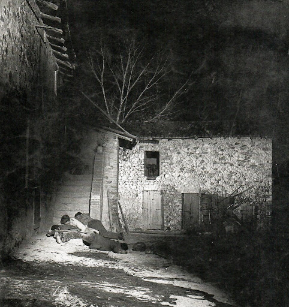

A San Martino di Lupari, il 29 aprile 1945, al mattino, l’avanzata della divisione nazista Falk arriva in località Lovari. Si è appena divisa: da una parte il contingente che sta invece avanzando presso la strada del Maglio verso Campretto, osteggiata dai partigiani. Nel frattempo gli alleati stanno sorvolando la zona e costringono la colonna a fermarsi ripetutamente. Vengono uccise due donne in casa. L’avanzata continua verso il centro di San Martino, dove la colonna si riunirà con il resto dell’avanguardia.
